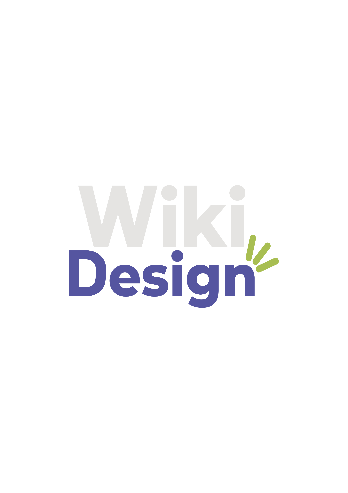

Acerca de WikiDesign
WikiDesign es una wiki académica creada por estudiantes de la Universidad del Valle de México para acompañar a quienes comienzan la carrera de Diseño. Queremos ofrecer un espacio cercano donde puedan encontrar información clara y útil para sus primeros pasos.
En sus páginas reunimos temas como diseño web, experiencia de usuario, diseño visual, navegación y otras áreas que forman parte de la disciplina. Cada sección explica conceptos y muestra cómo se aplican al crear sitios y productos digitales.
Este proyecto es colaborativo y tiene fines educativos: compartir lo que aprendemos, inspirar nuevas ideas y ayudar a que la comunidad estudiantil construya conocimiento en conjunto.
